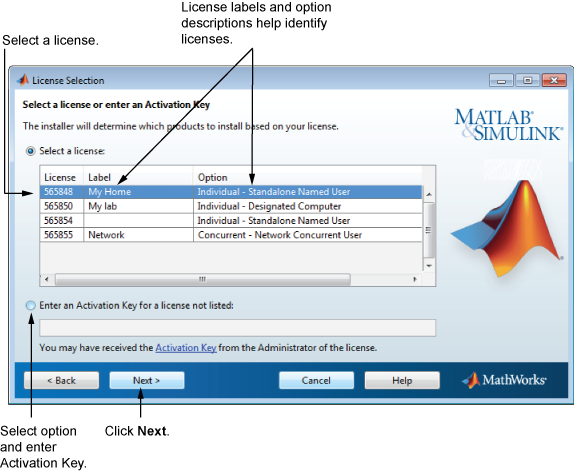

MathWorks® アカウントに関連付けられたライセンスの一覧からライセンスを選択して、[次へ] をクリックします。
自分の MathWorks アカウントに関連付けられていないライセンスを使用して製品をインストールする場合は、次の操作を行います。
[リストされていないライセンスのアクティベーション キーを入力] オプションをオンにします。
アクティベーション キーを入力して、[次へ] をクリックします。
"アクティベーション キー" とは、ライセンスを識別する固有のコードのことです。このコードを使用して、ライセンスのアクティベーションを行います。また、ライセンスを付与されたエンド ユーザーは各自の MathWorks アカウントをライセンスに関連付けることができます。ライセンス管理者は、MathWorks Web サイトのライセンス センターからアクティベーション キーを取得できます。MATLAB® 学生用ソフトウェアを購入した場合、アクティベーション キーは製品パッケージに含まれています。もしくは、MathWorks Web サイトのライセンス センターからキーを取得できます。
